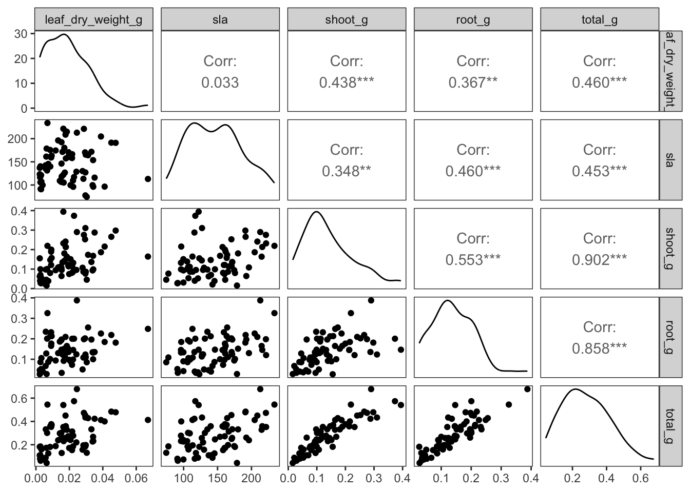
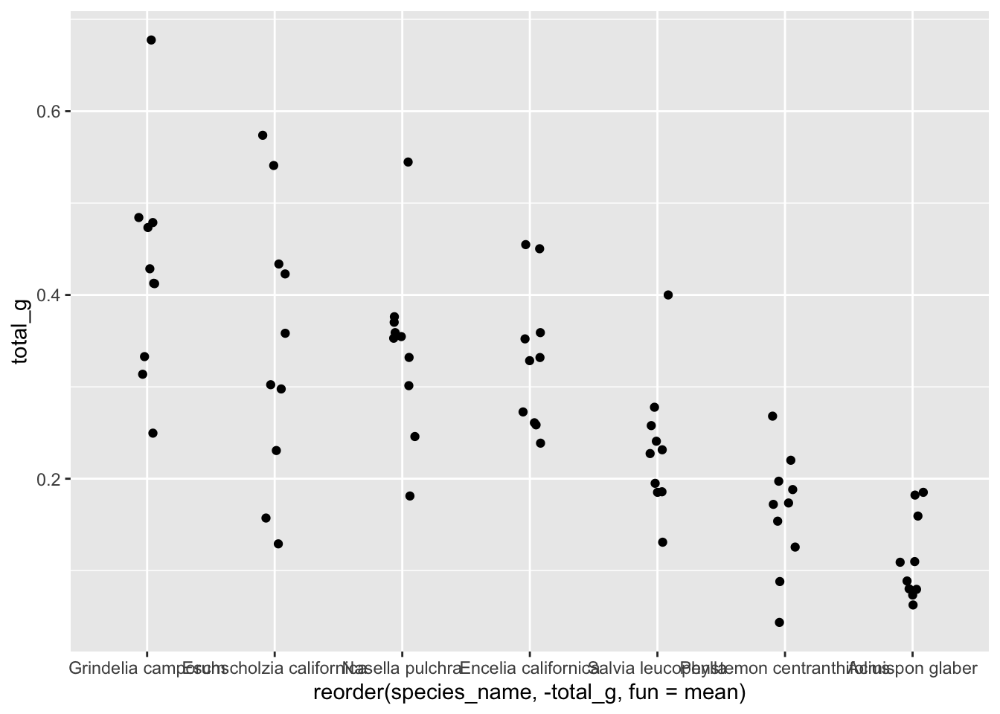

WARNING: this document provides the foundation for your homework 3, but you will need to create your own neat, organized document to render for your homework submission. Create a new document for your homework in the code folder of this repository.
You will not need all the information in this document to do your homework; IT IS YOUR JOB TO EDIT THE INFORMATION IN YOUR HOMEWORK DOCUMENT TO ONLY INCLUDE WHAT IS NECESSARY.
Relevant definitions:
specific leaf area (SLA, units: mm2/g): surface area of a leaf divided by its dry mass, represents life strategy (high SLA = large surface area and low mass = “fast” species)
root mass (units: g): mass of root tissue
shoot mass (units: g): mass of aboveground tissue
Set up
reading in packages
# general uselibrary(tidyverse)library(readxl)library(here)library(janitor)# visualizing pairslibrary(GGally)# model selectionlibrary(MuMIn)# model predictionslibrary(ggeffects)# model tableslibrary(gtsummary)library(flextable)library(modelsummary)drought_exp <-read_xlsx(path =here("data", "Valliere_etal_EcoApps_Data.xlsx"),sheet ="First Harvest")# here allows us to refer to specific. first arugment data file, then whawt the file actually is. then sheet# quick look at data str(drought_exp) # gives a tibble of what is in each column
class(drought_exp) # tells us what kind of "thing" each object is. Ex: table and data frame
[1] "tbl_df" "tbl" "data.frame"
cleaning
# cleaningdrought_exp_clean <- drought_exp %>%clean_names() %>%# nicer column namesmutate(species_name =case_when( # adding column with species scientific names species =="ENCCAL"~"Encelia californica", # bush sunflower species =="ESCCAL"~"Eschscholzia californica", # California poppy species =="PENCEN"~"Penstemon centranthifolius", # Scarlet bugler species =="GRICAM"~"Grindelia camporum", # great valley gumweed species =="SALLEU"~"Salvia leucophylla", # Purple sage species =="STIPUL"~"Nasella pulchra", # Purple needlegrass species =="LOTSCO"~"Acmispon glaber"# deerweed )) %>%relocate(species_name, .after = species) %>%# moving species_name column after speciesmutate(water_treatment =case_when( # adding column with full treatment names water =="WW"~"Well watered", water =="DS"~"Drought stressed" )) %>%relocate(water_treatment, .after = water) # moving water_treatment column after water
Visualizing
correlations
ggpairs(drought_exp_clean, # data framecolumns =c("leaf_dry_weight_g", # columns to visualize"sla", "shoot_g", "root_g", "total_g"), upper =list(method ="pearson")) +# calculating Pearson correlation coefficienttheme_bw() +# cleaner themetheme(panel.grid =element_blank()) # getting rid of gridlines

# visualize and calculate correlation coefficient# ex: top left dist of leaf dry weight (smooth diagonal line is distribution of all variable)# bottom left: scatter plot (10 eom point style plots for all of continious variables). EX: bottom left relationshap between leaf dry weight and total mass # root mass, leaf dry weight corr = 0.367. signficantly/strongly positively correlated
Choose 3 pairs of variables to compare. Make notes of those comparisons below.
Leaf dry weight is weakly and positively correlated with specific leaf area (Pearson’s r = 0.033
Shoot mass and total mass are strongly positively and correlated (Pearson’s r = 0.902)
Leaf dry weight is strongly and positively correlated with total mass (Pearson’s r = 0.046
Preliminary visualizations
If you aren’t familiar with each plant species, google them!
Then go exploring! Visually.
In this scenario, we’re interested in how three variables affect total biomass: species (categorical), water treatment (categorical), specific leaf area (SLA, numeric).
Note: it is totally ok (and encouraged) to explore these separately!
how does total biomass differ between species?
ggplot(data = drought_exp_clean, # data frameaes(x =reorder(species_name, # reordering x-axis-total_g, # in reverse order of mean total massfun = mean), # calculating mean to reordery = total_g)) +# y-axisgeom_jitter(width =0.1, # narrow jitterheight =0) # not jittering points up and down

# one easy way to get out patterns is to reorder x axis in reverse order of mean total mass
Total biomass seemingly does differ between species. Gumweed, California poppy and purple needlegrass seem to have the highest biomass. Deerweed, scarlet buguler and purplse sage seem to have the lowest biomass.
how does total biomass differ between water treatments?
ggplot(data = drought_exp_clean, # data frameaes(x = water_treatment, # x-axisy = total_g)) +# y-axisgeom_jitter(width =0.1, # narrow jitterheight =0) # not jittering points up and down
It seems that well water treated plants have a higher total biomass than drought stressed plants.
how does specific leaf area (SLA) influence total biomass?
It seems that specific leaf area moderately and positively affects total leaf mass.
Model construction
What is the null model?
Total biomass as a function of none of the predictors
What is the saturated model?
Total biomass as a function of Specific leaf area, water treatment and species
In class we are going to try two more models:
total biomass as a function of SLA and water treatment
total biomass as a function of SLA and species
For homework, you will construct one more model:
total biomass as a function of water treatment and species
You will then compare all 5 models to determine which best describes total biomass. For your homework, you will need to create a table summarizing the structure of these models.
0. Null model
model0 <-lm(total_g ~1, # formuladata = drought_exp_clean) # data frame
1. total biomass as a function of SLA, water treatment, and species
Out of the four models we have tried, the best model is model 4, the one that includes biomass as a function water treatment and species. This is because its delta is 0, and it has the lowest AIC.
DOUBLE CHECK DIAGNOSTICS FOR BEST MODEL
Note that this may change once you fit and compare the other model!
reference for species_name: acmispon glaber (deerweed)
intercept: The intercept, or mass of the reference (Acmispon glaber) in drought stressed water treatment, is 0.05455 ± 0.024g
well watered estimate: on average across species, well watered plants tend to be 0.12 ± 0.02g heavier than drought stressed plants. Water treatment significantly predicts total mass as p < 0.001.
Lotus scoparius estimate: across water treatments on average, Lotus scoparius plants were -0.20 ± 0.032 g less than Encelia californica.
Stipa pulchra estimate: across water treatments, Stipa pulchra plants are roughly the same size as Encelia californica plants.
Model predictions
Note: only plot terms in the model you select - if your doesn’t include one of these terms, take it out and adjust the plotting code accordingly!
model_preds <-ggpredict(model4, terms =c("water_treatment", "species_name"))view(model_preds)# use View(model_preds) to see the predictions as a data frame# use model_preds to see the predictions formatted nicely
Visualization
Note: this is the quick way to visualize model predictions. For your homework, you may find it easier to plot things yourself (i.e. not using the plot() functionality within ggeffects). See lecture for an example of how to do this.
Making a table
# one option for a single modelflextable::as_flextable(model1)
F-statistic: 23.44 on 61 and 8 DF, p-value: 0.0000
# another option for a single modelgtsummary::tbl_regression(model1)
Characteristic
Beta
95% CI1
p-value
sla
0.00
0.00, 0.00
0.6
water_treatment
Drought stressed
—
—
Well watered
0.12
0.08, 0.16
<0.001
species_name
Acmispon glaber
—
—
Encelia californica
0.24
0.14, 0.34
<0.001
Eschscholzia californica
0.23
0.17, 0.30
<0.001
Grindelia camporum
0.33
0.24, 0.42
<0.001
Nasella pulchra
0.24
0.16, 0.32
<0.001
Penstemon centranthifolius
0.06
-0.02, 0.14
0.13
Salvia leucophylla
0.12
0.05, 0.18
<0.001
1 CI = Confidence Interval
# comparing modelsmodelsummary::modelsummary( # this function takes a list of modelslist( "null"= model0, # "model name" = model object"model 1"= model1,"model 2"= model2,"model 3"= model3 ))
tinytable_fdv7ncg3nikr2aoyz8fq
null
model 1
model 2
model 3
(Intercept)
0.279
0.080
0.047
-0.033
(0.017)
(0.056)
(0.054)
(0.067)
sla
0.000
0.001
0.001
(0.000)
(0.000)
(0.001)
water_treatmentWell watered
0.122
0.090
(0.020)
(0.029)
species_nameEncelia californica
0.238
0.115
(0.051)
(0.059)
species_nameEschscholzia californica
0.234
0.222
(0.033)
(0.041)
species_nameGrindelia camporum
0.330
0.226
(0.047)
(0.054)
species_nameNasella pulchra
0.241
0.168
(0.040)
(0.048)
species_namePenstemon centranthifolius
0.061
-0.006
(0.039)
(0.047)
species_nameSalvia leucophylla
0.117
0.139
(0.033)
(0.041)
Num.Obs.
70
70
70
70
R2
0.000
0.755
0.303
0.610
R2 Adj.
0.000
0.722
0.282
0.566
AIC
-75.2
-157.5
-96.4
-127.1
BIC
-70.7
-135.0
-87.4
-106.8
Log.Lik.
39.580
88.741
52.220
72.538
RMSE
0.14
0.07
0.11
0.09
Note 1: notice all the information at the bottom of the modelsummary output - if you only needed the AIC and delta AIC, what could you do? see package documentation for help
Note 2: you will always have to report the F-statistic, degrees of freedom, test statistic, p-value, ⍺, and R2. Whether or not this information is in a table is up to you.